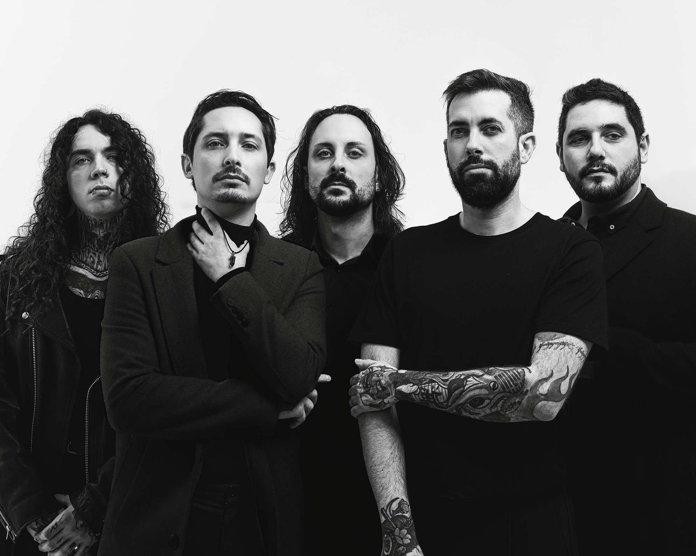
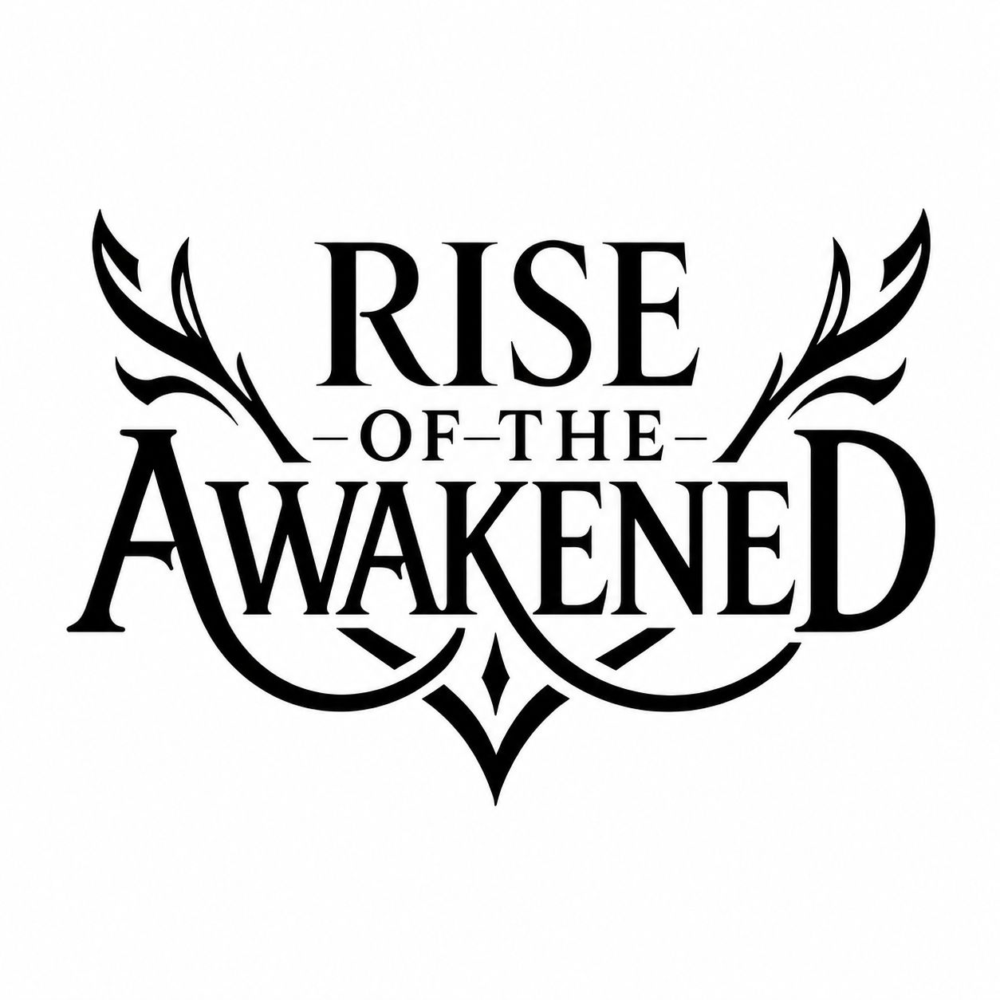

Miembros

Mario García-Lasvignes
Batería / Cantante

Juan Ramón
Bajo

Adrián Sánchez
Guitarra

Héctor Ortiz
Guitarra

David Manchableda
Voz / Screamer


Metal moderno. Identidad propia. Contundencia y evolución constante.
Descubrir la bandaRise Of The Awakened es una banda de metal moderno formada en 2021, con un sonido que combina elementos de metalcore, djent y deathcore, junto a una marcada presencia melódica y voces que aportan diferentes matices a su propuesta.
Desde sus inicios, la banda ha trabajado en desarrollar un sonido propio basado en riffs contundentes, estructuras dinámicas, breakdowns y una producción moderna, sin renunciar a la melodía y a la variedad vocal.
A lo largo de su trayectoria, Rise Of The Awakened ha ido consolidando su identidad musical y visual, apostando por una propuesta actual y orientada tanto al directo como a la producción de estudio.
Actualmente, la banda se encuentra inmersa en una nueva etapa de crecimiento, trabajando en nuevos lanzamientos y material audiovisual con el objetivo de ampliar su presencia dentro de la escena del metal moderno y llegar a un público cada vez más amplio.
Rise Of The Awakened representa una propuesta centrada en la evolución constante, la contundencia y la búsqueda de una identidad propia dentro del metal contemporáneo.
Batería / Cantante
Bajo
Guitarra
Guitarra
Voz / Screamer